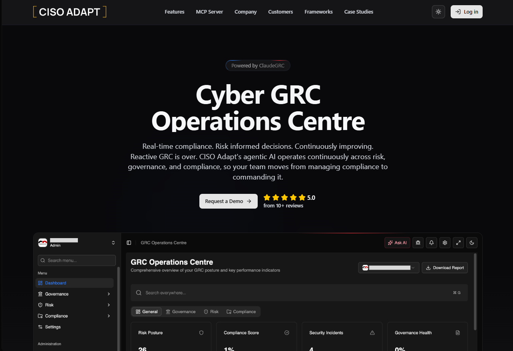
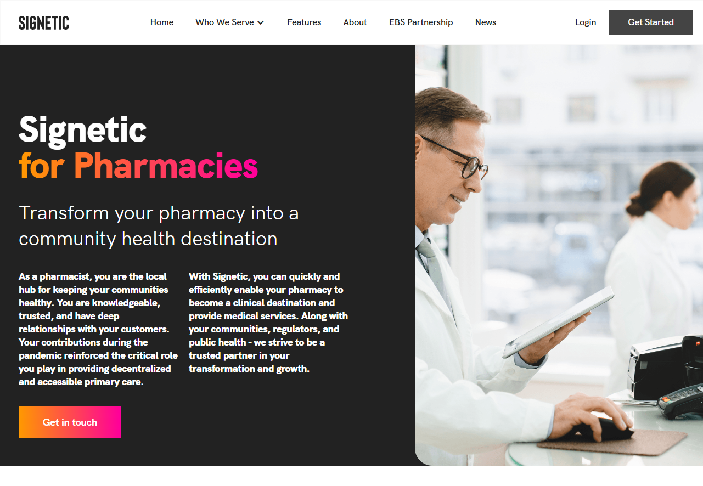
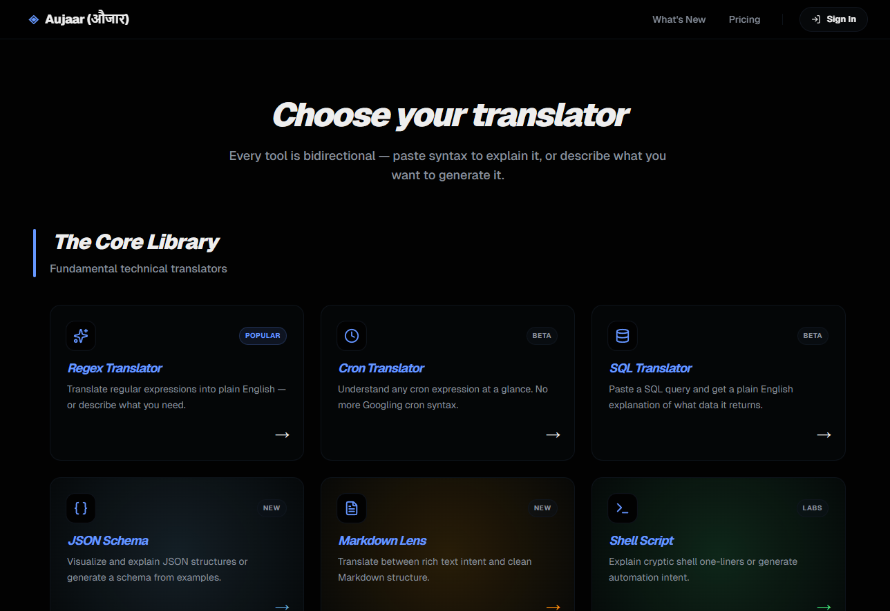

Subodh Khanal
Full Stack Developer & Tech Lead building scalable, robust full-stack enterprise architectures, 11+ years across development, deployment, and database management.
+977-9861063831 · prosubodh@gmail.com · linkedin.com/in/prosubodh · Remote · Kathmandu, Nepal
Open to consultations, guidance, part-time and full-time roles
A bit about me
Bridging the gap between design and solid engineering.
I am a results-driven software engineer with a BCIS degree and extensive experience in development, deployment, and database management. I thrive in agile environments, working alongside cross-functional teams to deliver robust software architectures that scale effectively.
Outside of work, I produce music on a hobby basis. You can find my latest on YouTube (@prosubodh).
Core Technologies
Where I've worked
My professional journey so far.
Software Development Lead
CY Cyberensic (Remote)
Leading a team of 8 (developers, QA, DevOps) building the Governance Risk & Compliance (GRC) platform using React, Node.js, and PostgreSQL. Shipped a standards assessment (ISO 27001) that compresses weeks to days with evidence-based automations, an AI-powered risk register that logs risks in minutes instead of hours, and an end-to-end governance/risk/compliance/project-management flow that replaces spreadsheets. Also proactively receiving Product Ownership mentorship from an experienced Scrum professional, improving product planning and strategy alignment.
Senior Software Engineer
UB UBA Solution (Lalitpur, Nepal)
Planned and resolved intricate system bugs, actively participated in Scrum methodologies, and implemented thorough unit tests for strict code quality assurance and system reliability improvements.
Senior Software Engineer
LF Leapfrog Technology (Kathmandu, Nepal)
Designed, implemented, and maintained high-availability enterprise applications, including the Signetic Healthcare Platform. Managed the migration of Microsoft Power Platform modules into separated services, ran performance testing, and led knowledge-sharing sessions introducing new frameworks and tools.
Software Engineer
PS Pioneer Solutions (Kathmandu, Nepal)
Built applications in core PHP with comprehensive UI components and database structures including tables, functions, and stored procedures. Added a full menu search feature that increased user efficiency by ~20% by removing the need to click through nested menus and navigation. Pioneer Solutions was fully acquired by Hitachi Energy about a month before my departure in Jan 2021.
Software Developer
NC NCCS Software (Kathmandu, Nepal)
Designed and developed websites for educational institutions and corporate clients using HTML, CSS, jQuery, and PHP with MySQL. Built Drupal entities and modules, collaborating with cross-functional teams to deliver high-quality web solutions.
Things I've built
Complex technical deliveries.

CISO Adapt cisoadapt.ai
A comprehensive Governance, Risk & Compliance platform that delivers standards assessments (ISO 27001) in days instead of weeks, an AI-powered risk register, and a single end-to-end governance/risk/compliance/project-management workflow.

Signetic Healthcare Platform signetic.com · a Leapfrog project
Built a high-availability platform for healthcare operations, including a major accomplishment: migrating legacy MS Power Platform modules to stateless microservices with 99.99% uptime.

Energy Trading & Risk Management (ETRM)
An energy trading and risk management platform built at Pioneer Solutions (later acquired by Hitachi Energy) using PHP, SQL Server, and the DHTMLX JavaScript library.

Aujaar (औजार) WIP
An experimental plain-language engine for developers. Translates complex regex, cron syntax, SQL, and Git diffs into plain English.
Certifications & Learning
Continuous professional development.
- HIPAA Course - Leapfrog Technology, Nov 2022 View certificate
- US Healthcare Course - Leapfrog Technology, Nov 2022 View certificate
- Product Ownership Coaching - mentorship received from an experienced Scrum professional; product planning and strategy now better aligned
- Flutter App Development Workshop - Leapfrog Technology
Let's work together
Open to consultations, guidance, part-time and full-time roles. Remote-first, based in Kathmandu.